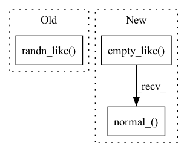

Pattern ID :13906

Before Change
block_mask.to(x.dtype), kernel_size=clipped_block_size, stride=1, padding=clipped_block_size // 2)
if with_noise:
normal_noise = torch.randn((1, C, H, W), dtype=x.dtype, device=x.device) if batchwise else torch.randn_like(x)
if inplace:
x.mul_(1. - block_mask).add_(normal_noise * block_mask)
else:
x = x * (1. - block_mask) + normal_noise * block_mask
After Change
block_mask.to(x.dtype), kernel_size=clipped_block_size, stride=1, padding=clipped_block_size // 2)
if with_noise:
normal_noise = torch.empty_like(x).normal_()
if inplace:
x.mul_(1. - block_mask).add_(normal_noise * block_mask)
else:
x = x * (1. - block_mask) + normal_noise * block_mask
In pattern: SUPERPATTERN
Frequency: 3
Non-data size: 3
Instances
Fragment ID: 46210721
Project Name: feng-lab/pytorch-image-models
Commit Name: b27c21b09a2d92b86e465f6ecd3ec11bf3eaa270
Time: 2022-01-06
Author: rwightman@gmail.com
File Name: timm/models/layers/drop.py
M Class Name: AnonimousClass
N Class Name: AnonimousClass
M Method Name: drop_block_fast_2d(6)
N Method Name: drop_block_fast_2d(7)
M Parent Class:
N Parent Class:
M File Name: timm/models/layers/drop.py
N File Name: timm/models/layers/drop.py
M Start Line: 72
M End Line: 94
N Start Line: 81
N End Line: 89
'>
Before Change
block_mask.to(x.dtype), kernel_size=clipped_block_size, stride=1, padding=clipped_block_size // 2)
if with_noise:
normal_noise = torch.randn((1, C, H, W), dtype=x.dtype, device=x.device) if batchwise else torch.randn_like(x)
if inplace:
x.mul_(1. - block_mask).add_(normal_noise * block_mask)
else:
x = x * (1. - block_mask) + normal_noise * block_mask
After Change
block_mask.to(x.dtype), kernel_size=clipped_block_size, stride=1, padding=clipped_block_size // 2)
if with_noise:
normal_noise = torch.empty_like(x).normal_()
if inplace:
x.mul_(1. - block_mask).add_(normal_noise * block_mask)
else:
x = x * (1. - block_mask) + normal_noise * block_mask
'>
Fragment ID: 46210720
Project Name: feng-lab/pytorch-image-models
Commit Name: d04f2f137795017fc110ecf1084ffbfdf5a25747
Time: 2021-12-05
Author: rwightman@gmail.com
File Name: timm/models/layers/drop.py
M Class Name: AnonimousClass
N Class Name: AnonimousClass
M Method Name: drop_block_fast_2d(6)
N Method Name: drop_block_fast_2d(7)
M Parent Class:
N Parent Class:
M File Name: timm/models/layers/drop.py
N File Name: timm/models/layers/drop.py
M Start Line: 72
M End Line: 94
N Start Line: 81
N End Line: 89
'>
Before Change
ndim = x_t.ndim
model_mean, _, model_logvar, pred_x_0 = self.p_mean_var(
denoise_fn, x_t, t, clip_denoised=clip_denoised, return_pred=True)
noise = torch.randn_like(x_t)
nonzero_mask = (t > 0).reshape((-1,) + (1,) * (ndim - 1)).to(x_t)
sample = model_mean + nonzero_mask * torch.exp(0.5 * model_logvar) * noise
return (sample, pred_x_0) if return_pred else sample
After Change
def p_sample_step(self, denoise_fn, x_t, t, clip_denoised=True, return_pred=False, generator=None):
model_mean, _, model_logvar, pred_x_0 = self.p_mean_var(
denoise_fn, x_t, t, clip_denoised=clip_denoised, return_pred=True)
noise = torch.empty_like(x_t).normal_(generator=generator)
nonzero_mask = (t > 0).reshape((-1,) + (1,) * (x_t.ndim - 1)).to(x_t)
sample = model_mean + nonzero_mask * torch.exp(0.5 * model_logvar) * noise
return (sample, pred_x_0) if return_pred else sample
'>
Fragment ID: 46210722
Project Name: tqch/ddpm-torch
Commit Name: ae680b0f9dd35ff43532d9a7e0106948ba7ca4ba
Time: 2022-11-12
Author: tqch2020@gmail.com
File Name: ddpm_torch/diffusion.py
M Class Name: GaussianDiffusion
N Class Name: GaussianDiffusion
M Method Name: p_sample_step(7)
N Method Name: p_sample_step(6)
M Parent Class:
N Parent Class:
M File Name: ddpm_torch/diffusion.py
N File Name: ddpm_torch/diffusion.py
M Start Line: 153
M End Line: 157
N Start Line: 152
N End Line: 156